컴퓨터응용가공산업기사 (2007-09-02 기출문제)
1과목: 기계가공법 및 안전관리
1. 윤활제의 사용 목적이 아닌 것은?
- 밀폐 작용
- 냉각 작용
- 방진 작용
- 청정 작용
(정답률: 56%)

2. 그림에서 심압대의 편위량을 구하는 공식은 어느 것인가? (단, X=심압대 편위량)
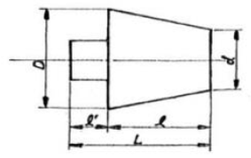
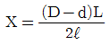
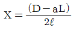
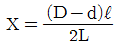
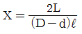
(정답률: 62%)
3. 다음 중 나사의 호칭지름 10mm, 피치 1.2mm의 나사를 태핑하기 위한 드릴의 지름으로 가장 적당한 것은?
- 6.8 mm
- 8.8 mm
- 10.8 mm
- 11.2 mm
(정답률: 83%)
4. 퓨즈가 끊어져서 다시 끼웠을 때, 다시 끊어졌을 경우 조치 사항으로 가장 적합한 것은?
- 다시 한번 끼워본다.
- 조금 더 용량이 큰 퓨즈를 끼운다.
- 합선 여부를 검사한다.
- 굵은 동선으로 바꾸어 끼운다.
(정답률: 88%)
5. 밀링머신의 부속품 및 부속장치가 아닌 것은?
- 슬로팅 장치
- 분할대
- 앤드릴
- 회전 테이블
(정답률: 48%)
6. 입도가 작은 연한 숫돌을 작은 압력으로 공작물 표면에 가압하면서 공작물에 이송을 주고 또 숫돌을 좌우로 진동 시키면서 가공하는 것은?
- 슈퍼피니싱
- 폴리싱
- 브로칭
- 버니싱
(정답률: 72%)
7. 밀링머신에서 테이블의 뒤틈(back lash)제거장치는 어디에 설치하는가?
- 변속기어
- 테이블 이송나사
- 테이블 이송핸들
- 자동 이송레버
(정답률: 75%)
8. 1차로 가공된 가공물의 안지름보다 다소 큰 강구9steel ball)를 압입하여 통과시켜서 가공물의 표면을 소성변형시켜 가공하는 방법은?
- 버니싱(burnishing)
- 래핑(lapping)
- 호닝(honing)
- 연삭(grinding)
(정답률: 69%)
9. 나사의 유효지름 측정에 사용되지 않는 측정기는?
- 투영기
- 나사 마이크로미터
- 공구 현미경
- 포인트 마이크로미터
(정답률: 45%)
10. 창성식 기어절삭법을 옳게 설명한 것은?
- 호빙 머신에서 절삭공구와 일감을 서로 적당한 상대운동을 시켜서 치형을 절삭하는 방법이다.
- 세이퍼 등에서 바이트를 치형에 맞추어 절삭하여 완성하는 방법이다.
- 밀링머신과 같이 총형 밀링커터를 이용하여 절삭하는 방법이다.
- 세이퍼의 테이블에 모형과 소재를 고정한 후 모형에 따라 절삭하는 방법이다.
(정답률: 50%)
11. 너트 또는 캡 스크류 머리의 자리를 만들기 위하여 구멍 축에 직각방향으로 주위를 평면으로 깍는 작업인 것은?
- 스폿 페이싱
- 브로칭
- 카운터 싱킹
- 맨드릴
(정답률: 58%)
12. 전원도를 측정하는 방법과 관계 없는 것은?
- 직경법
- 투명법
- 3점법
- 반경법
(정답률: 64%)
13. 선반에서 척으로 고정할 수 없는 큰 공작물이나 불규칙한 공작물을 고정할 때 사용하는 부속품은?
- 면판
- 돌래개
- 회전판
- 연동척
(정답률: 70%)
14. 연삭숫돌바퀴의 원주속도를 1800m/min으로 정하였을 때 바깥지름 355mm의 원판형 숫돌 바퀴의 회전수는?
- 약 1514rpm
- 약 1614rpm
- 약 1714rpm
- 약 1814rpm
(정답률: 45%)
15. 연삭숫돌 표시법 WA 60 L6 Y에서 60의 의미는?
- 결함도
- 조직
- 임도
- 결합제
(정답률: 49%)
16. 안지름의 측정에 가장 적합한 측정기는?
- 텔레스코핑 게이지
- 깊이 게이지
- 레버식 다이얼 게이지
- 센터 게이지
(정답률: 61%)
17. 센터리스 연삭기의 장점이 아닌 것은?
- 연삭 여유가 작아도 된다.
- 중공물의 원통 연삭에 편리하다.
- 대형이나 중량물의 연삭에 알맞다.
- 연삭숫돌의 폭이 크므로 지름의 마멸이 적다.
(정답률: 77%)
18. 선반작업시 안전사항으로 틀린 것은?
- 기계 위에 공구나 재료를 올려놓지 않는다.
- 자동이송 상태에서 기계를 정지시키지 않는다.
- 절삭공구의 장착은 가능한 길게 고정한다.
- 가공물을 측정할 때는 기계를 정지시키고 한다.
(정답률: 78%)
19. 지름 75mm의 탄소강을 절삭속도 150m/min으로 가공 하고자 한다. 가공 길이 300mm, 이송은 0.2mm/rev로 할 때 1회 가공시 가공시간은?
- 약 2.4분
- 약 4.4분
- 약 6.4분
- 약 8.4분
(정답률: 47%)
20. CNC 선반에서 나사 절삭 사이클의 준비기능 코드는?
- G02
- G27
- G72
- G92
(정답률: 41%)
2과목: 기계설계 및 기계재료
21. 다음 중 강의 표면 경화법으로서 표면에 Al을 침투시키는 표면 경화법은?
- 크로마이징
- 칼로라이징
- 실리콘나이징
- 보론나이징
(정답률: 73%)
22. 강괴(ingot)의 제조시 기공이 발생하지 않도록 첨가하는 탈산제가 아닌 것은?
- Fe-Si
- Fe-Mn
- FeCO3
- Al
(정답률: 37%)
23. 다음 중 담금질 조직 중에서 경도가 가장 큰 것은?
- 페라이트
- 펄라이트
- 마텐자이트
- 트루스타이트
(정답률: 80%)
24. 구상 흑연 주철의 조직이 아닌 것은?
- 페라이트 형
- 오스테나이트 형
- 시멘타이트 형
- 펄라이트 형
(정답률: 39%)
25. 다음 중 내식성 알루미늄 합금인 것은?
- 인바
- 알민
- 엘린바
- 인코넬
(정답률: 37%)
26. 다음[보기]에서 금속의 재결정 순서가 맞는 것은?
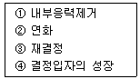
- ①→②→③→④
- ②→①→③→④
- ①→②→④→③
- ②→①→④→③
(정답률: 33%)
27. 구리에 아연을 5~20% 함유한 것으로 색깔이 아름답고 장식품에 주로 사용되는 황동은?
- 포금
- 운쯔 메탈
- 틈백
- 하이드로날륨
(정답률: 74%)
28. 다음 중 발전기, 전동기, 변압기 등의 철심 재료에 가장 적합한 특수강은?
- 저탄소강에 Si를 첨가한 강
- 탄소강에 Pb 또는 흑연을 첨가한 강
- 저탄소강에 Ni을 첨가한 강
- 탄소강에 Mn을 첨가한 강
(정답률: 45%)
29. 다음 중 결정격자가 면심입방격자(FCC)인 금속은?
- γ-Fe
- α-Fe
- Mo
- Zn
(정답률: 43%)
30. 철강 상태도의 A3선 이상의 적당한 온도에서 가열한 후 공기중에서 냉각하는 열처리 방법으로, 강을 표준상태로 하고, 가공조직의 균일화, 결정립의 미세화 등을 목적으로 하는 열처리는?
- 담금질
- 불림
- 고주파열처리법
- 침탄법
(정답률: 57%)
31. 마찰차의 응용범위에 대한 설명 중 옳지 않은 것은?
- 전달하여야 될 힘이 그다지 크지 않고 정확한 속도비를 중요시 하지 않는 경우
- 양축 사이를 빈번하게 단속할 필요가 없는 경우
- 회전속도가 커서 보통의 기어를 사용할 수 없는 경우
- 무단변속을 하는 경우
(정답률: 24%)
32. 하중 3 ton이 걸리는 압축코일 스프링의 변형량이 10mm일 때 스프링 상수는 몇 kgf/mm인가?
- 300
- 1/300
- 100
- 1/100
(정답률: 63%)
33. 레이디얼 저널베이링에 작용하는 압력 p를 구하는 식은? (단, W:베어링하중, d:저널의 지름, : 저널의 길이이다.)
- p = (dℓ)/W
- p = W/(dℓ)
- p = d/(Wℓ)
- p = W/(d2ℓ)
(정답률: 65%)
34. 다음 중 가장 큰 회전력을 전달시킬 수 있는 키는?
- 평 키
- 안장 키
- 핀 키
- 접선 키
(정답률: 48%)
35. V-벨트의 각도는 보통 몇 도인가?
- 90°
- 60°
- 40°
- 30°
(정답률: 58%)
36. 지름이 60mm인 축의 전달 토크가 25000kgf·mm일 때 너비가 10mm, 높이가 8mm인 묻힘 키의 길이는? (단, 허용전단응력은 =7kgf/mm2이다.)
- 8mm
- 12mm
- 15mm
- 16mm
(정답률: 56%)
37. 전위기어의 사용 목적과 관계가 가장 가까운 것은?
- 계산을 단순하게 하기 위해
- 언더컷을 피하기 위해
- 교환성을 향상하기 위해
- 물림틀을 감소시키기 위해
(정답률: 64%)
38. 다음 중 응력을 구하는 식으로 맞는 것은? (단, σ는 응력, A는 단면적, P는 작용하중으로 한다.)
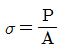
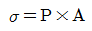
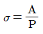
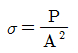
(정답률: 64%)
39. 다음 중 운동용 나사의 분류로 맞지 않는 것은?
- 사각나사
- 톱니나사
- 삼각나사
- 사다리꼴 나사
(정답률: 51%)
40. S-N 선도에서 응력의 값이 어느 일정한 값에 도달하면 곡선이 수평으로 되어, 이 응력 이하에서는 아무리 반복 횟수를 늘려도 파괴되지 않게 된다. 이 응력의 한도 값을 무엇이라 하는가?
- 응력한도
- 수직한도
- 피로한도
- 수평한도
(정답률: 56%)
3과목: 컴퓨터응용가공
41. 3차원 솔리드 모델 중 프리미티브(primitive)형상이라고 할 수 없는 것은?
- 원뿔
- 직선
- 구
- 육면체
(정답률: 70%)
42. 와이어프레임(wireframe) 모델의 특징에 해당하지 않는 것은?
- 물리적 성질의 계산이 가능하다.
- 처리속도가 빠르다.
- 숨은선 제거가 불가능하다.
- 해석용 모델에 사용이 불가능하다.
(정답률: 74%)
43. NC의 곡면가공에서 그림과 같이 블 엔드밀의 반경을 R이라 하고 공구의 회전축 방향(공구 끝에서 기계 스핀들을 향하는 방향)을 단위벡터 u로 표시하면, CL(Cutter Location)데이터 rL은 곡면상의 접촉점 rc로부터 어떻게 표현되는가?
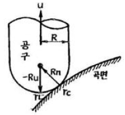
- rL = rc – R (n+u)
- rL = rc + R (n+u)
- rL = rc + R (n-u)
- rL = rc - R (n-u)
(정답률: 36%)
44. 다음 솔리드 모델링에 관한 설명 중 틀린 것은?
- 솔리드 모델링은 CSG(Constructive Solid Geometry)와 B-rep(Boundary representation)방법 등이 있다.
- CSG 방법은 육면체, 구, 원통, 피라미드 등의 기본적인 프리미티브(primitive)로부터 더하고, 빼고, 공통부분등을 찾아 만든다.
- CSG 방법은 B-rep 방법보다 형상을 재생하는데 시간이 적게 걸린다.
- B-rep 방법은 CSG 방법보다 많은 메모리 용량이 필요하다.
(정답률: 50%)
45. surface 모델링 기법에 관한 설명으로 알맞지 않은 것은?
- 곡면 모델링 시스템은 와이어프레임 모델에 면 정보를 추가한 형태이다.
- 곡면을 이루는 각 면들의 곡면 방정식이 데이터베이스내에 추가로 저장된다.
- 곡면을 생성하기 위해서는 면 정보로 이루어진 입력자료가 항상 요구된다.
- 금형가공을 위한 NC 공구 경로 계산 프로그램에서 가공곡면의 형상을 제공하는데 사용될 수 있다.
(정답률: 39%)
46. 곡면을 모델링하는 방식 중 네 개의 경계곡선을 선형보간하여 형성되는 곡면은 무엇인가?
- 선형 곡면
- 쿤스(Coons) 곡면
- 스윕(Sweep) 곡면
- 회전 곡면
(정답률: 75%)
47. B-spline 곡선과 곡면을 다양하게 변형할 수 있고 절점(knot)벡터가 비균일한 곡선을 무엇이라고 하는가?
- Bezier
- Spline
- NURBS
- Coons
(정답률: 50%)
48. NURBS곡선에 대한 설명으로 틀린 것은?
- 원, 타원, 포물선, 쌍곡선 등 원추 곡선을 정확하게 나타낼 수 있다.
- 일반적인 B-spline 곡선을 포함한다.
- 3차 NURBS곡선은 특정 노트구간에서 4개의 조정점 외에 4개의 가중치(weight value)와 절점(knot) 벡터의 정보가 이용된다.
- 모든 조정점을 지나는 부드러운 곡선이다.
(정답률: 65%)
49. 컴퓨터를 이용한 공정계획의 약자로 맞는 것은?
- CAP
- CAPP
- MRP
- CAT
(정답률: 64%)
50. 화면표시장치(display unit)의 판넬을 매운 작은 크기의 네온(neon) 구슬로 된 배열로 구성하여 전압의 크기로 구슬의 on, off를 조정하여 화면에 그림이나 text를 출력하는 장치는?
- 액정 표시장치(LCD)
- 플라즈마 표시장치(plasma display)
- CRT(Cathode Ray Tube)
- 벡터 표시장치(Vector display)
(정답률: 39%)
51. 일반적으로 CAD 시스템에서 사용하는 좌표계의 종류가 아닌 것은?
- 직교 좌표계
- 극 좌표계
- 원뿔 좌표계
- 구면 좌표계
(정답률: 67%)
52. 컬러 CRT 화면 뒤에 사용되는 인(phosphor)의 색상이 아닌 것은?
- 적색(red)
- 녹색(green)
- 흰색(white)
- 청색(blue)
(정답률: 59%)
53. 다음 중 디지털 목업(digital mock-up)에 관한 설명으로 가장 거리가 먼 것은?
- 실물 mock-up의 사용빈도를 줄일 수 있는 대안이다.
- 간섭검사, 기구학적 검사 그리고 조립체 속을 걸어다니는 듯한 효과 등을 낼 수 있다.
- 적어도 surface나 solid model로 각각의 단품이 모델링 되어야 한다.
- 조립체 모델링에는 아직 적용되지 않는다.
(정답률: 59%)
54. 다음 중 좌표계에 관한 설명으로 잘못된 것은?
- 실세계에서 모든 점들은 3차원 좌표계로 표현된다.
- x, y, z축의 방향에 따라 오름손좌표계와 왼손좌표계가 있다.
- 모델링에서는 직교좌표계가 사용되지만, 원통좌표계나 구면좌표계가 사용되기도 한다.
- 좌표계의 변환에는 행렬 계산의 편리성으로 동차좌표계 대신 직교좌표계가 주로 사용된다.
(정답률: 47%)
55. 동차 좌표(homogeneous coordinate)에 의한 표현을 바르게 설명한 것은?
- N차원의 벡터를 N-1차원의 벡터로 표현한 것이다.
- N차원의 벡터를 N+1차원의 벡터로 표현한 것이다.
- N차원의 벡터를 N(N-1)차원의 벡터로 표현한 것이다.
- N차원의 벡터를 N(N+1)차원의 벡터로 표현한 것이다.
(정답률: 43%)
56. 다음 자료 입력장치 중에서 커서(cursor)의 움직임을 제어하여 자료를 입력하는 장치가 아닌 것은?
- data glove
- track ball
- thumb wheel
- joy stick
(정답률: 53%)
57. (5, 4)인 점을 원점을 중심으로 반시계 방향으로 30°회전시킨 점의 좌표를 구한 것은?
- (-2.33, 6.33)
- (2.33, 5.964)
- (3.21, 5.964)
- (3.21, -5.964)
(정답률: 46%)
58. 다음 중 화상이 나타날 뷰잉표면이 2차원의 단위 정방형 영역으로 정의되는 좌표계를 지칭하는 용어는?
- 장치좌표계
- 실세계좌표계
- 독립좌표계
- 정규좌표계
(정답률: 53%)
59. 면들이 모서리나 꼭지점에서 예리하게 만날 때 기존 면에 법선벡터가 연속되는 부드러운 곡면을 생성하여 그 부분을 대치하는 작업으로 만들어진 모델을 수정하는 기능은?
- 리프팅(lifting)
- 블렌딩(blending)
- 스키닝(skinning)
- 스위핑(sweeping)
(정답률: 63%)
60. 서로 다른 CAD 시스템에서 구성된 그래픽 데이터를 교환하는 표준으로 미국에서 시작하여 1981년 ANSI의 표준규격으로 제정된 것은?
- IGES
- DXF
- SET
- PDDI
(정답률: 75%)
4과목: 기계제도 및 CNC공작법
61. (보기)와 같은 기호에서 1.6숫자가 의미하는 것은?
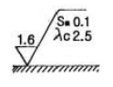
- 컷오프 값
- 기준길이 값
- 평가길이 표준값
- 산술 평균 거칠기의 값
(정답률: 63%)
62. 일반적인 경우 도면에서 표제란의 위치로 가장 적합한 곳은?
- 오른쪽 아래
- 왼쪽 아래
- 아래 중앙부
- 오른쪽 옆
(정답률: 81%)
63. 다음 중 숨은선의 용도로 옳은 것은?
- 도형의 중심을 표시하는데 사용
- 대상물의 보이지 않는 부분의 모양을 표시하는데 사용
- 대상물의 보이는 부분의 모양을 표시하는데 사용
- 인접한 부분을 참고로 표시하는데 사용
(정답률: 76%)
64. 다음 중 제1각법에 대한 설명으로 옳은 것은?
- 정면도 오른쪽에 우측면도를 그린다.
- 평면도 아래쪽에 정면도를 그린다.
- 정면도 아래쪽에 저면도를 그린다.
- 저면도 아래쪽에 정면도를 그린다.
(정답률: 42%)
65. (보기)와 같은 표면의 결 도시기호의 해석으로 틀린 것은?
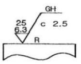
- 가공방법은 연삭 가공
- 컷오프 값은 2.5mm
- 거칠기 하한은 6.3㎛
- 가공에 의한 커터의 줄무늬가 기호를 기입한 면의 중심에 대하여 대략 레이디얼 모양
(정답률: 62%)
66. 3각법으로 정투상한 보기 도면에서 A의 치수는?
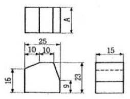
- 15
- 16
- 23
- 25
(정답률: 80%)
67. 스케치시 재질 판정법 중 타당하지 않은 것은?
- 색깔이나 광택에 의한 법
- 피로시험에 의한 법
- 불꽃검사에 의한 법
- 경도시험에 의한 법
(정답률: 34%)
68. 기하 공차 도시방법에서 다름 그림의 데이텀을 표시하는 방법은 어떠한 경우에 하는가?
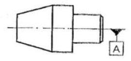
- 문자기호에 의한 데이텀이 선이나 면 자체인 경우
- 치수가 지정되어 있는 대상면의 축 직선 또는 중심 원통면이 데이텀인 경우
- 잘못 볼 염려가 없는 데이텀이 선인 경우
- 축직선 또는 중심 평면이 공통인 모든 형체의 축직선 또는 중심 평명이 데이텀인 경우
(정답률: 39%)
69. 보기와 같은 제3각 정투상도의 입체도로 적합한 것은?
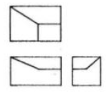
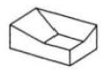
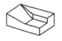
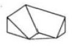
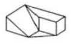
(정답률: 83%)
70. 관용 평행 암나사와 관용 테이퍼 수나사의 조합된 것을 바르게 표시한 것은?
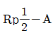
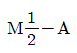
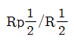
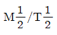
(정답률: 57%)
71. 수치제어 자동화 시스템의 발달 과정을 4단계로 분류한 것이다. 맞는 것은?
- NC→CNC→DNC→FMS
- DNC→NC→CNC→FMS
- FMS→NC→CNC→DNC
- NC→NDC→CNC→FMS
(정답률: 78%)
72. CNC 공작기계에 사용되는 서보(servo)기구 중 위치검출 회로가 없는 방식은?
- 반폐쇄회로 방식
- 폐쇄회로 방식
- 개방회로 방식
- 하이브리드 서보 방식
(정답률: 57%)
73. 범용 공작기계에서 사람의 손, 발과 같은 기능이 CNC 공작기계에서는 어느 부분에서 이루어 지는가?
- 컨트롤러
- 볼 스크루
- 리졸버
- 서보기구
(정답률: 65%)
74. CNC선반에서 공구를 현재의 위치에서 X축으로 50mm, Z축으로 50mm만큼 이동한 후에 기계원점으로 복귀시키는 프로그램으로 맞는 것은?
- G28 U0. W0. ;
- G28 U50.0 W50.0 ;
- G28 X0. Z0 ;
- G28 X25.0 Z50.0 ;
(정답률: 61%)
75. 다음 그림에서 P1에서 P2로 절대 명령으로 원호 가공하는 머시닝센터 프로그램으로 올바른 것은?
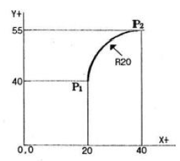
- G90 G02 X40.0 Y55.0 R20.0 ;
- G90 G02 X20.0 Y15.0 R20.0 ;
- G91 G03 X20.0 Y15.0 R20.0 ;
- G91 G03 X40.0 Y55.0 R20.0 ;
(정답률: 75%)
76. 아래의 CNC 선반 프로그램에서 N7 블록의 절삭속도는 몇 m/min인가?
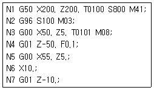
- 25
- 50
- 100
- 800
(정답률: 25%)
77. 머시닝센터에서 원호 보간에 관한 설명으로 잘못된 것은?
- 시계방향의 원호 보간은 G02로 명령한다.
- 90°이상의 원호를 명령할 때 반지름은 “-”의 값으로 명령한다.
- 원호의 I, J, K의 부호와 값은 원호의 시작점에서 본원호 중심점의 벡터성분이다.
- G17 평면에서 원호를 가공할 때 벡터는 I와 J를 쓴다.
(정답률: 73%)
78. 머시닝센터의 작업 전 육안검사 사항이 아닌 것은?
- 공기압은 충분히 유지하고 있는가
- 윤활유 탱크에 윤활유 양은 적당한가
- 전기적 회로는 정상 상태인가
- 공작물은 정확히 물려져 있는가
(정답률: 73%)
79. 기계의 원점을 기준으로 정한 좌표계는?
- 절대 좌표계
- 상대 좌표계
- 잔여 좌표계
- 기계 좌표계
(정답률: 71%)
80. ISO 선삭용 인서트의 형변 표기법에서 밑줄 친 C가 나타내는 것은 무엇인가?
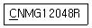
- 공차
- 노즈 반경
- 인서트 형상
- 여유각
(정답률: 84%)